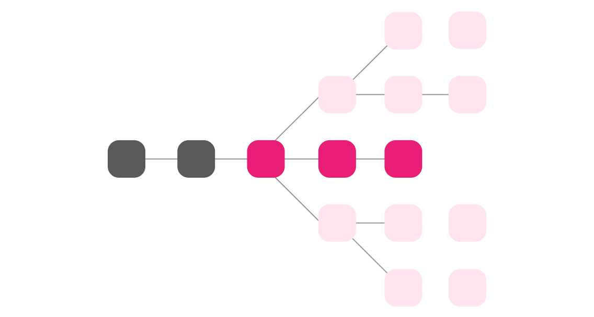
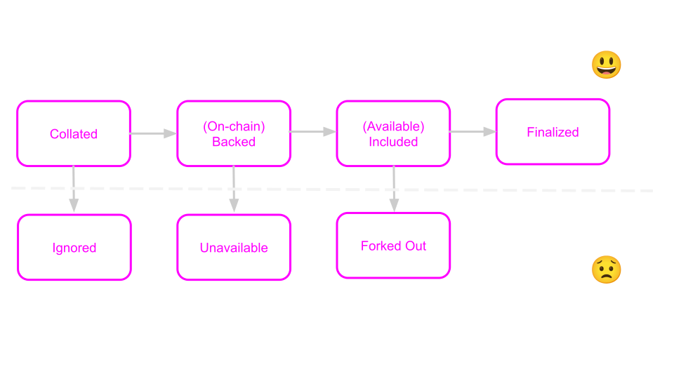
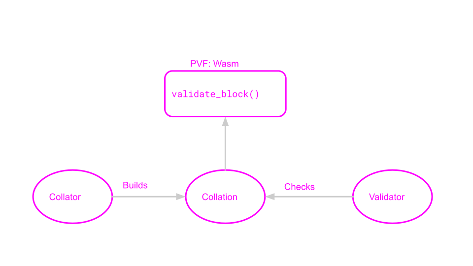
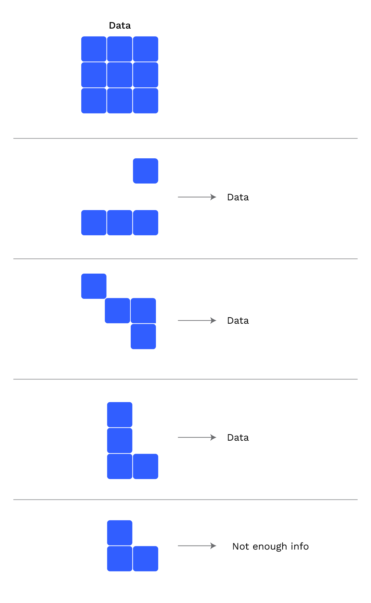
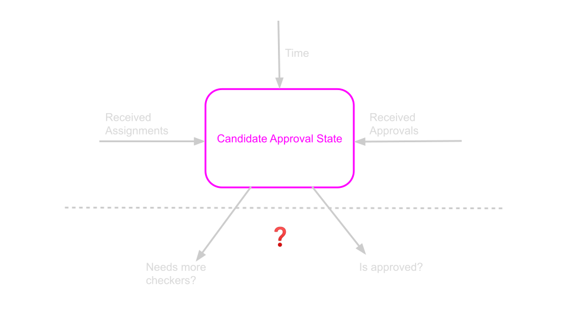
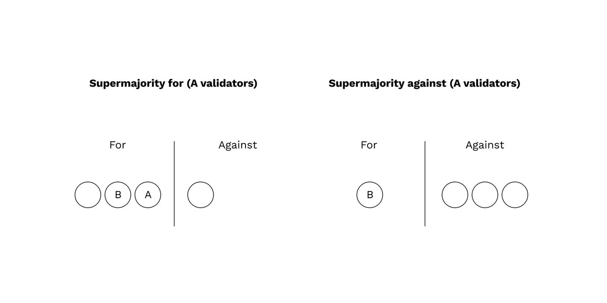
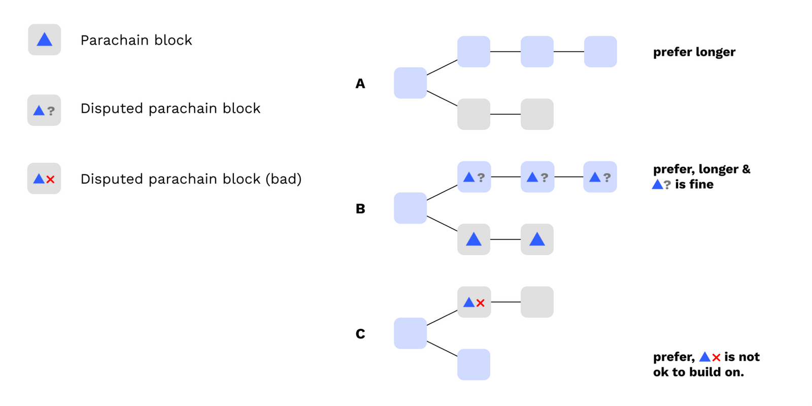

<!DOCTYPE html>
<html lang="en">

<head>
  <meta charset="utf-8" />
  <meta name="viewport" content="width=device-width, initial-scale=1.0, maximum-scale=1.0, user-scalable=no" />

  <title>Execution Sharding in Polkadot</title>
  <link rel="icon" href="./../../../assets/favicon.svg" />
  <link rel="shortcut icon" href="./../../../assets/favicon.png" />
  <link rel="stylesheet" href="./../../../dist/reset.css" />
  <link rel="stylesheet" href="./../../../dist/reveal.css" />
  <link rel="stylesheet" href="./../../.././assets/styles/PBA-theme.css" id="theme" />
  <link rel="stylesheet" href="./../../../css/highlight/shades-of-purple.css" />

  <link rel="stylesheet" href="./../../.././assets/styles/custom-classes.css" />

</head>

<body class="site">
  <header class="site-header">
    <!-- This logo is a link only on the watching server, not the production build -->
    <a href="">
      
    </a>
  </header>
  <main class="reveal">
    <article class="slides">
      <section  data-markdown><script type="text/template">

# Execution Sharding in Polkadot
</script></section><section  data-markdown><script type="text/template">
## Execution Sharding

> Execution Sharding is the process of distributing blockchain execution responsibilities across a validator set.
</script></section><section  data-markdown><script type="text/template">
## Execution Sharding in Polkadot

> In Polkadot, all validators execute every relay chain block, but only a subset execute each parachain block.

This enables Polkadot to scale.
</script></section><section  data-markdown><script type="text/template">
## Lesson Agenda

<pba-flex center>

1. Discuss the high-level protocols and principles of Execution Sharding in Polkadot
1. Provide background on how complex on & offchain logic is implemented with Substrate

</pba-flex>

<aside class="notes"><p><a href="https://polkadot.network/blog/polkadot-v1-0-sharding-and-economic-security/">Polkadot v1.0: Sharding and Economic Security</a> is a comprehensive writeup of the content here in much more detail.
Please read it after the lesson if you would like to understand how Polkadot works from top to bottom.</p>
</aside></script></section><section  data-markdown><script type="text/template">
## Goals of Execution Sharding

<pba-flex center>

1. A minimal amount of validator nodes should check every parachain block while still maintaining security
1. The relay chain will provide ordering and finality for parachain blocks
1. Only valid parachain blocks will become finalized

</pba-flex>

<aside class="notes"><p>Because GRANDPA finality faults require 33% or more stake to be slashed, Goal (3) implies Shared Security</p>
</aside></script></section><section  data-markdown><script type="text/template">
## Forkfulness

Before finality, the relay chain can _fork_, often accidentally due to races.

Tool: deliberately fork away from unfinalized blocks we don't like.



<aside class="notes"><p>In the slides, we will look at single instances of the protocols, but it should be known that the validators are actually doing these steps in parallel with each other and often many times at a time.</p>
</aside></script></section><section  data-markdown><script type="text/template">
## Parachains Protocols

<pba-flex center>

1. **Collation**: Making parachain blocks
1. **Backing**: Validator initial checks & sign-off of blocks
1. **Availability**: Distributing data needed for checking
1. **Approval Checking**: Checking blocks
1. **Disputes**: Holding backers accountable

</pba-flex>
</script></section><section  data-markdown><script type="text/template">
Validators are constantly running many instances of these protocols, for candidates at different stages in their lifecycle.
</script></section><section  data-markdown><script type="text/template">
### Candidate Lifecycle


</script></section><section  data-markdown><script type="text/template">
## 10,000 foot view

Polkadot's approach is to have few validators check every parablock in the best case.

First, **backers** introduce new candidates to other validators and provide "skin in the game".

Then, **approval checkers** keep them accountable.
</script></section><section  data-markdown><script type="text/template">
Goal: Have as few checkers as reasonably possible.
</script></section><section  data-markdown><script type="text/template">
#### Validator Group Assignments and Execution Cores


<aside class="notes"><p>Every Session (4 hours), validators are <em>partitioned</em> into small <strong>groups</strong> which work together.<br/>
Groups are assigned to specific <strong>Execution Core</strong>s, and these assignments change every few blocks.</p>
</aside></script></section><section  data-markdown><script type="text/template">
## Definition: Candidate

> A **Candidate** is a parachain block<br/>which has not yet been finalized in the relay chain.
</script></section><section  data-markdown><script type="text/template">
## Definition: HeadData

> **Head Data** is an opaque and compact representation of a parachain's current state.
> It can be a hash or a small block header, but must be small.
</script></section><section  data-markdown><script type="text/template">
## Definition: Parachain Validation Function (PVF)

From a Validator's perspective, a parachain is a WebAssembly blob which exposes the following (simplified) function:

```rust
type HeadData = Vec<u8>;
struct ValidationResult {
  /// New head data that should be included in the relay chain state.
  pub head_data: HeadData,
  // more fields, like outgoing messages, updated code, etc.
}

fn validate_block(parent: HeadData, relay_parent: RelayChainHash, pov: Vec<u8>)
  -> Result<ValidationResult, ValidationFailed>;
```
</script></section><section  data-markdown><script type="text/template">
#### Why might `validate_block` fail?

1. `parent` or `PoV` is malformed - the implementation can't transform it from an opaque to specific representation
1. `parent` and `PoV` decode correctly but don't lead to a valid state transition
1. `PoV` is a valid block but doesn't follow from the `parent`

```rust
fn validate_block(parent: HeadData, relay_parent: RelayChainHash, pov: Vec<u8>)
  -> Result<ValidationResult, ValidationFailed>;
```
</script></section><section  data-markdown><script type="text/template">
## Relay Chain Block Contents


</script></section><section  data-markdown><script type="text/template">
Any node can be selected as the next Relay Chain block author, so these data must be widely circulated.
</script></section><section  data-markdown><script type="text/template">
## Collation

The collator's job is to build something which passes `validate_block`.

In the Collation phase, a collator for a scheduled parachain builds a parachain block and produces a candidate.

The collator sends this to validator group assigned to the parachain over the p2p network.
</script></section><section  data-markdown><script type="text/template">
Some collator pseudocode:

```rust
fn simple_collation_loop() {
  while let Some(relay_hash) = wait_for_next_relay_block() {
    let our_core = match find_scheduled_core(our_para_id, relay_hash) {
      None => continue,
      Some(c) => c,
    };

    let parent = choose_best_parent_at(relay_hash);
    let (pov, candidate) = make_collation(relay_hash, parent);
    send_collation_to_core_validators(our_core, pov, candidate);
  }
}
```
</script></section><section  data-markdown><script type="text/template">

</script></section><section  data-markdown><script type="text/template">
## Backing

In the backing phase, the validators of the assigned group share the candidates they've received from collators, validate them, and sign statements attesting to their validity.

Validate means roughly this: execute `validate_block` and check the result.

They distribute their candidates and statements via the P2P layer, and then the next relay chain block author bundles candidates and statements into the relay chain block.
</script></section><section  data-markdown><script type="text/template">
## Backing: Networking


</script></section><section  data-markdown><script type="text/template">
## Backing: Skin in the Game

The main goal of backing is to provide "skin in the game".

Backers are agreeing that if the parablock turns out to be bad, they will lose 100% of their stake.

Backing on its own does not provide security, only accountability.

<aside class="notes"><p>The current minimum validator bond as of Aug 1, 2023 is ~1.7 Million DOT.</p>
</aside></script></section><section  data-markdown><script type="text/template">
## Availability

At this point, the backers are responsible for making the data needed to check the parablock available to the entire network.

Validators sign statements about which data they have and post them to the relay chain.

If the parablock doesn't get enough statements fast enough, the relay chain runtime just throws it out.
</script></section><section  data-markdown><script type="text/template">
#### Erasure Coding

<div class="grid grid-cols-3">

<div>



</div>

<div class="col-span-2">

Each validator is responsible for one piece of this data.
As long as enough of these pieces stay available, the data is recoverable.

The statements validators sign and distribute to all other validators essentially say "I have my piece".

Once 2/3 or more such statements land on-chain, the candidate is ready to be checked and is **included**.

</div>

</div>
</script></section><section  data-markdown><script type="text/template">
Some pseudocode for availability:

```rust
fn get_availability_chunks() {
  while let Some(backed_candidate, backing_group) = next_backed_candidate() {
    let my_chunk = fetch_chunk(
      my_validator_index,
      backed_candidate.hash(),
      backing_group,
    );
    let signed_statement = sign_availability_statement(backed_candidate.hash());
    broadcast_availability_statement(signed_statement);
  }
}
```
</script></section><section  data-markdown><script type="text/template">


<aside class="notes"><p>In practice, we allow more than a single block for availability to be timed out.</p>
</aside></script></section><section  data-markdown><script type="text/template">
## Parablock Inclusion and Finality


</script></section><section  data-markdown><script type="text/template">
## Parablock Inclusion and Finality

> (3) Only valid parachain blocks will become finalized

<aside class="notes"><p>Remember our goal from earlier?</p>
</aside></script></section><section  data-markdown><script type="text/template">
## Parablock Inclusion and Finality

To fulfill this goal we need 2 things.

<pba-flex center>

1. A protocol for proving validity of included candidates
1. Consensus rules for the relay chain<br/>to avoid building on or finalizing<br/>relay chain forks containing bad candidates.

</pba-flex>
</script></section><section  data-markdown><script type="text/template">
## What is "Checking" a Parablock?

Checking involves three operations:

<pba-flex center>

1. Recovering the data from the network (by fetching chunks)
1. Executing the parablock, checking success
1. Check that outputs match the ones posted<br/>to the relay chain by backers

</pba-flex>

<aside class="notes"><p>Step 3 is of crucial importance.
Without it, backers could create things like messages and runtime upgrades out of thin air, by backing a valid candidate but lying about the outputs of the candidate.</p>
</aside></script></section><section  data-markdown><script type="text/template">
## Security Model: Gambler's Ruin

The security argument for Polkadot is based on Gambler’s Ruin.

An attacker who can take billions of attempts to brute-force the process would eventually be successful.

But because of slashing, every failed attempt means enormous amounts of DOT slashed.
</script></section><section  data-markdown><script type="text/template">
<!-- .slide: data-background-color="#000" -->

## Approval Checking
</script></section><section  data-markdown><script type="text/template">
Every validator tracks its opinion about the validity of every unfinalized, included candidate in a local **state machine**.

This state machine always either outputs "approved" or stalls.
</script></section><section  data-markdown><script type="text/template">
#### Key properties:

<pba-flex center>

1. The state machine output on a validator is based on the statements it has received.
1. If the parachain block is really valid (i.e. passes checks) then it will eventually output "approved" on honest nodes.
1. If the parachain block is invalid, it is much more likely to be detected than to output "approved" on enough honest nodes.

</pba-flex>

<aside class="notes"><p>Honest nodes output &quot;approved&quot; only if there is a very large amount of malicious checkers and they mainly see votes
from those checkers as opposed to honest checkers.</p>
<p>Low probability here means 1 in 1 billion or so (assuming 3f &lt; n)
Not cryptographic low probability, but good enough for crypto-economics.</p>
</aside></script></section><section  data-markdown><script type="text/template">
Validators keep track of statements about **every** candidate.

Validators only issue statements about **a few** candidates.
</script></section><section  data-markdown><script type="text/template">
Validators issue two types of statements:

- Assignments: "I intend to check X"
- Approvals: "I checked & approved X"
</script></section><section  data-markdown><script type="text/template">

</script></section><section  data-markdown><script type="text/template">
Every validator is assigned to check every parablock, but at different times.

Validators always **generate** their assignments, but keep them secret unless they are needed.
</script></section><section  data-markdown><script type="text/template">

</script></section><section  data-markdown><script type="text/template">
Validator assignments are secret until **revealed**.

Validators **distribute** revealed assignments before checking the candidate.

Assignments without following are called **no-shows**.
No-shows are suspicious, and cause validators to raise their bar for approval.

<aside class="notes"><p>If validators began downloading data before revealing their assignment, an attacker might notice this and attack them without anybody noticing.</p>
</aside></script></section><section  data-markdown><script type="text/template">


<aside class="notes"><p>Approval Checking is like the hydra.
Every time an attacker chops off one head, two more heads appear.</p>
</aside></script></section><section  data-markdown><script type="text/template">
It only takes one honest checker to initiate a dispute.
</script></section><section  data-markdown><script type="text/template">
## Disputes

When validators disagree about the validity of a parablock, a dispute is automatically raised.

Disputes involve all validators, which must then check the block and cast a vote.

Backing and Approval statements already submitted are counted as dispute votes.

Votes are transmitted by p2p and also collected on-chain.
</script></section><section  data-markdown><script type="text/template">
## Dispute Resolution



<aside class="notes"><p>resolution requires a supermajority in either direction.</p>
</aside></script></section><section  data-markdown><script type="text/template">
## Dispute Slashing

The validators on the losing side of the dispute are slashed.

The penalty is large when the candidate is deemed invalid by the supermajority and small when it is deemed valid.
</script></section><section  data-markdown><script type="text/template">
## GRANDPA Voting Rules

Instead of voting for the longest chain, validators vote for the longest chain where all unfinalized included candidates are

<pba-flex center>

1. approved (according to their local state machine)
1. undisputed (according to their best knowledge)

</pba-flex>


</script></section><section  data-markdown><script type="text/template">
## BABE Chain Selection Rule

Validators refuse to author relay chain blocks on top of forks containing parablocks which are invalid or have lost disputes.
This causes a "reorganization" whenever a dispute resolves against a candidate.


</script></section><section  data-markdown><script type="text/template">
<!-- .slide: data-background-color="#4A2439" -->

> How are complex off-chain systems<br/>implemented using Substrate?
</script></section><section  data-markdown><script type="text/template">
## Interaction Between Client & Runtime

Since Polkadot involves not only on-chain logic but off-chain logic, the runtime is the central source of truth about validators, assignments, parachain states, etc.

Clients learn about the state by invoking **Runtime APIs** at recent blocks, and the runtime is updated with **new blocks**.


<aside class="notes"><p>Because the runtime is updated by new blocks, malicious or poorly connected validators have some choice in which information to provide the runtime with.
This must be accounted for in the protocol: we cannot assume that the runtime is always perfectly informed.</p>
</aside></script></section><section  data-markdown><script type="text/template">
## Orchestra

https://github.com/paritytech/orchestra

**Orchestra** allows us to split up the node's logic into many "Subsystems" which run asynchronously.

These subsystems communicate with message passing and all receive signals which coordinate their activities.
</script></section><section  data-markdown><script type="text/template">
## Orchestra: Signals

Signals are sent to all subsystems and act as a "heartbeat".

Messages sent after a signal arrives on one subsystem cannot arrive at another subsystem until it has received the same signal.
</script></section><section  data-markdown><script type="text/template">
## Orchestra: Signals in Polkadot

```rust
/// Signals sent by the overseer (Polkadot's Orchestra name) to all subsystems.
pub enum OverseerSignal {
	/// Subsystems should adjust their jobs to start
	/// and stop work on appropriate block hashes.
	ActiveLeaves(ActiveLeavesUpdate),
	/// `Subsystem` is informed of a finalized block
	/// by its block hash and number.
	BlockFinalized(Hash, BlockNumber),
	/// Conclude the work of the `Overseer` and all `Subsystem`s.
	Conclude,
}
```

<aside class="notes"><p>The instantiation of Orchestra in Polkadot is called &quot;Overseer&quot;.</p>
</aside></script></section><section  data-markdown><script type="text/template">
## Without Orchestra:

```rust
fn on_new_block(block_hash: Hash) {
  let work_result = do_some_work(block_hash);
  inform_other_code(work_result);
}
```

Problem: There is a race condition!

The other code may receive `work_result` before learning about the new block.
</script></section><section  data-markdown><script type="text/template">
## With Orchestra:

```rust
fn handle_active_leaves_update(update: ActiveLeavesUpdate) {
  if let Some(block_hash) = update.activated() {
    let work_result = do_some_work(block_hash);
    inform_other_subsystem(work_result);
  }
}
```

This works!
Orchestra ensures that the message to the other subsystem only arrives after it has received the same update about new blocks.
</script></section><section  data-markdown><script type="text/template">
## Examples of Subsystems in Polkadot

<pba-flex center>

- Dispute Participation
- Candidate Backing
- Availability Distribution
- Approval Checking
- Collator Protocol
- everything!

</pba-flex>
</script></section><section  data-markdown><script type="text/template">
## Implementers' Guide

[The Implementers' Guide](https://paritytech.github.io/polkadot/book) contains information about all subsystems, architectural motivations, and protocols used within Polkadot's runtime and node implementation.
</script></section><section  data-markdown><script type="text/template">
<!-- .slide: data-background-color="#4A2439" -->

# Questions
</script></section>
    </article>
  </main>

  <script src="./../../../dist/reveal.js"></script>

  <script src="./../../../plugin/markdown/markdown.js"></script>
  <script src="./../../../plugin/highlight/highlight.js"></script>
  <script src="./../../../plugin/zoom/zoom.js"></script>
  <script src="./../../../plugin/notes/notes.js"></script>
  <script src="./../../../plugin/math/math.js"></script>

  <script src="./../../../assets/plugin/mermaid.js"></script>
  <script src="./../../../assets/plugin/mermaid-theme.js"></script>

  <script src="./../../../assets/plugin/chart/chart.js"></script>
  <script src="./../../../assets/plugin/chart/chart.min.js"></script>

  <script src="./../../../assets/plugin/tailwindcss.min.js"></script>

  <script>
    function extend() {
      var target = {};
      for (var i = 0; i < arguments.length; i++) {
        var source = arguments[i];
        for (var key in source) {
          if (source.hasOwnProperty(key)) {
            target[key] = source[key];
          }
        }
      }
      return target;
    }

    // default options to init reveal.js
    var defaultOptions = {
      controls: true,
      progress: true,
      history: true,
      center: true,
      transition: 'default', // none/fade/slide/convex/concave/zoom
      slideNumber: true,
      mermaid: {
        startOnLoad: false,
        logLevel: 3,
        theme: 'base',
        themeVariables: {
          primaryColor: purple,
          primaryTextColor: white,
          primaryBorderColor: pink,
          lineColor: pink,
          secondaryColor: lightPurple,
          tertiaryColor: lightPurple,
        },
      },
      chart: {
        defaults: {
          color: 'lightgray', // color of labels
          scale: {
            beginAtZero: true,
            ticks: { stepSize: 1 },
            grid: { color: "lightgray" }, // color of grid lines
          },
        },
        line: { borderColor: ["#ccc", "#E6007A", "#6D3AEE"], "borderDash": [[5, 10], [0, 0]] },
        bar: { backgroundColor: ["#ccc", "#E6007A", "#6D3AEE"] },
      },
      plugins: [
        RevealMarkdown,
        RevealHighlight,
        RevealZoom,
        RevealNotes,
        RevealMath,
        RevealMermaid,
        RevealChart
      ]
    };

    // options from URL query string
    var queryOptions = Reveal().getQueryHash() || {};

    var options = extend(defaultOptions, {"width":1400,"height":900,"margin":0,"minScale":0.2,"maxScale":2,"transition":"none","controls":true,"progress":true,"center":true,"slideNumber":true,"backgroundTransition":"fade"}, queryOptions);
  </script>


  <script>
    Reveal.initialize(options);
  </script>
</body>

</html>
